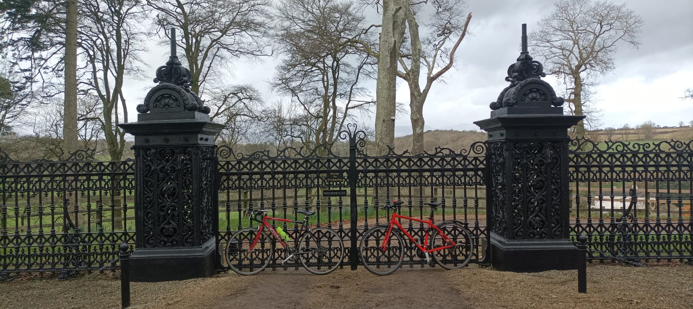

16 Ballinacourty (Dungarvan)
0845, Sunday February 4, 2024
I got in to Dunmore East at 9ish last night but Graham and Sophie eat like Spaniards so we tucked in to some needless vino and, as if in a postmodern novel, veggie burgers from Graham’s own home delivery range, Halfway There. Afterwards, we tried to plan out our route on Google Maps, which really didn’t want us to follow the Copper Coast road, westwards across Waterford from Dunmore to Dungarvan. We are heading to Ballinacourty Lighthouse today, on the eastern side of Dungarvan Bay, the one I leapfrogged on my way to Mine Head and Youghal, cos I was saving it for this trip with Gk. From his gaff, it’s at least a 110k return journey, back and forth along the hilly coast-road cliffs, whereas Google Maps is insisting we take the longer flatter inland route along the much-loved Waterford #greenway. 130 clicks is too far in the short days of the Irish winter, so we decide to drive our Boola Boggers to Tramore, home of multiple lightless lighthouses, then hug the Copper Coast and check out the #greenway on the return leg. This means skipping a biteen of coastline but you can’t win ’em all. We pencil in a solid 90 clicks and Sophie is on call in case it gets too dark to cycle this evening.
Our exit strat this morning is a step up from our last trip but the timing coincides with the kids’ morning routine so GK changes their nappies and has a bit of Txiki horseplay with the bambino, while the toddler settles down for her Peppa fix. I faff about, munching eggs and prepping my pared down cycling bag, and engaging in some lowkey pressuremongering; then we’re out of there by 845. It’s only fifteen bogger minutes to Tramore, plus a pit stop for Graham to grab a can of unannounced cola, which I would have enjoyed partaking in as we’ve brung zero scran for the Dermot.
16.1 Tramore

We park at the top of the long Tramore strand and whip out our Paul vans. It’s a pissy grey day and I’ve been too scared to look again at the forecast, a luxury I can half-afford as I’ve got my shit to-prettymuch-gether, gearwise, after the frozation disaster the last day. I finally stalled it over to Decathlon where I was kitted out by a chatty chunfla called Hugh Butler whose dad, Paul, used to be a pro. It was nice to be chatting to a #realcyclist and it’s high time I joined a club and learnt more. So anyway, I’m wearing a skintight bodywarmer base layer with chest padding, which is the permanent version of shoving a newspaper down your jersey, and a wine-colored outer coat which looks like the red leather jacket I picked up in actual Dalston during the peak recession, peak Being a Dickhead is Cool era. ¿Before hipsters were even known as hipsters? I’ve actually lashed my yellow jersey on top for visibility, maximising the Italo Disco slash gaybar vibe, and then I’ve gone and ruined it all with a shoddy dark windbreaker. Meanwhile, GK is making do with a bright yellow sailing jacket which protects him from the external elements but exposes him to the internal ones. He’s borrowed a mountain bike off a different Ralph this time and he’s happy with his lot.
From Tramore Strand you can see a set of lightless columns on either arm of the wide bay. Two on Brownstown Head on the Dunmore slash east side, which we won’t be cycling to, and three on the Tramore slash west side, where a dude called the Metal Man waves to mariners, and that’s our first port of call. These towers were erected in 1826 after the horrific Seahorse tragedy of 1816, where almost four hundred people lost their lives in Tramore Bay, and two hundred more elsewhere that same night. The Seahorse lives on in the logo of Waterford Crystal and in the crest of Tramore.
16.2 A treasure trove of coves
There’s wee warm up climb out of Tramore, at the top of which we get a cheer from a local, and then we turn left along the coast road where we find not one but two fine swimming spots. The Guillamene seems to be a diving-in point for advanced swimmers and sure enough there’s a walrus in there battling the swell. Round the corner is Newtown Cove, a glorious inlet where three ladies are taking a casual ice bath, because they can.
The Metal Man is clearly visible on the other headland but I don’t take a photo because I’m thinking we’ll just be able to cycle up and take a load of selfies. Of course it turns out to be on a private farm and there’s not even a laneway to it because it’s not a lighthouse and doesn’t need routine maintenance. I should really know better by now. Lighthouse Pete told me about the Metal Man last week when we met for a scoop in Clonee. He’s been writing a blog about Irish lighthouses since the mid-noughties – something to keep himself going since he quit the punk scene – and I’ve been wanting to catch up with him for ages. Seeing as I’m getting out of Dublin 15 any day now, I got my finger out and we caught up. He’s an unassuming, self-confessed anorak, and it felt like meeting a real-life character from a Nick Hornby book, minus the melodrama. He’s a fiend for the football history too, as was I as a chunfla, and finally someone can confirm to me that the goalkeeper in the 1956 FA Cup final did indeed break his neck and play on. “Bert Trautmann”, he says, “from Germany. Imagine what it must have been like for a lone German in England after the war.” This sympathy for the lone ranger may well explain his interest in lighthouses and the the disproportionately harsh living conditions for the keepers and their families. He has found a sub-niche to write about within the lighthouse genre, compiling the stories of all fatalities at Irish lighthouses and he has kindly given me a copy ofhis book. He’s got a collector’s determination too, and he tells me all about the lesser known navigation aids dotted along the coast, unfinished lighthouses and, of course, errors on Google Maps. I’m delighted to be standing on the shoulder of anoraks, and Pete’s knowledge will be even more invaluable as I plan out the awkward trips to the islands along the west and northern coasts.
16.3 Farm coast
The so-called coast road from Tramore to Annestown is up and down through a buncha farms and we don’t see too much of the sea. It’s catch up time for me and Graham and we’re having the lolz, despite our subject matter. I’m banging on about a marketer slash banter merchant called Rory Sutherland who has given me a timely reminder me of the world beyond charts and graphs and data and AI, where I’ve been for the last four years, because I’ll be losing my boulot job and I’m searching for a more benignant purpose, despite our subject matter. Meanwhile, at the coalface, Gk is on Instagram looking for customers, getting #Influencers to push his wares. It’s a tough hustle for fellas of our age who learnt the Jimi Internet as a second language and now have to compete with the old digital natives coming up from behind.
I don’t recall much of the landscape and I’m not sure if it was uneventful or if I’m distracted by the chat. Cycling chat is different from hiking where you can get into the depths of conversation, pounding out the entirety of a topic in time to your relentless march. But on the bike, the road interrupts your jabber. A steep ramp. A car whizzes by. The views change and merit remark. When cycling alone, continuity is retained in the mind, at least for me. I’m worried I’m corrupting my writing by cycling with another person. My sense of observation might be being corroded by sheer fun. I’m going to have to keep an eye on this issue if I am to get more people involved in the coming trips. But cycling together is a beautiful task, always unequal, so it’s my job today to keep GK going. It’s high time I found people to mentor me into being a better cyclist. I make the mistake of telling him that we are still two hours from the lighthouse and it’s killing him. His manageable unit is 10k at a time, it turns out. Mostly I keep quiet on such matters cos I know from five-a-side football how much he hates micro-management. He’s his own man and I respect that.
The arrival into Annestown is welcome delight. A little valley of fields morphs into the strand with a lake and possibly marsh area around it. The tiny village sits on a very steep hill, guarded at its base by a pleasingly conspicuous pink house on one right and a less visible #bighouse on the left. Graham takes a quick detour left - unannounced, which I really love about him - to check out the beach where a few shrieking bathers jump the waves, washing away their Bank Holiday excesses. The skedj is tight so we don’t hang around. We scale the village hill and Graham spots a nice scene where aged congregants hover outside a small church after mass, although they’re gonzo agin I get back to photo them. There’s a football pitch with long grass and ancient dugouts still standing, untouched, and the village feels like both a dying community and a newfound hub for seaside revelry. As a kid, I saw a picture of the Third Lanark football club and that image of an abandoned football pitch has always haunted me for some reason.
16.4 Copper Mines
The road from Annestown to Bunmahon is a proper coast road, with scenery as good as the best, and the highlight is the wider Kilmurrin Beach where a handful of beach-clad bathers queue for the sauna pod before their cold plunge. At this point, the road takes a fascinating path, with a sigmoid curve down one cliff and another back up the other cliff, and then we’re back on the plateau.
The Copper Coast takes its name from the copper mines which used to be along this stretch, between 1824 and 1875, and some ruins survive from this rare burst of Irish Victorian industry, when up to two-thousand workers slaved here, pulling copper out of the ground. there is no obvious evidence of their habitation. We stop off at the ruins where a “freestanding rubble stone chimney” distinguishes the site from any normal ruin, and the inner workings of the main “engine house” are explained in detail that certainly doesn’t underestimate the audience: “This building is a winding engine house. It houses a steam engine which pulled materials up and down the mine shafts. The design of the internally mounted beam engine was basically the same as that of a pumping engine, other than the reciprocating motion converted into a circular motion through the connecting rod and internally mounted flywheel.”
16.5 Gourmet House Cafe, Bunmahon
It’s time for some elevenses so we stop off in an empty Gourmet House cafe. Coffee isn’t Graham’s cuppa tea so he orders the latter and we ogle the delicioso cakes. His belly doesn’t scream like mine so he just orders a carrot cake, while I’m trying to maximise the calorie-to-cash ratio, being the scabby fatso that I am. The only nutty offer has peanuts and honey, a combo I maxed out on as a sprog, so I choose a homemade bounty bar, which is deloosh but insufficient, so we get some Fulfil bars for the road. The friendly proprietress behind the counter opens with a question about our accents, which is easy for me, given Dublin’s range of known accents, but Graham keeps his ¿eh-actually-Navan? gob shut. So we tell the lady we’re checking out the Copper Coast for the Doris, and she breaks into tour guide mode, extolling the virtues of coastal living and I’m just there, thinking, “Yeahno, nono, no I know like”, cos she’s preaching to the converted and I’ll be moving to Wickla any week now, with sea views in the morning and saltwater air in my lungs, once the solicitors bother their Gordons to push their pencils in harmony.
There’s a print on the wall of the copper mines, looking like a scene from Victorian Britain not Ireland, with prospectors dressed in splendid white and knackered miners in the shadows, the lot of them united by their stern poses and over-the-top moustaches. I ask Orla, with whom we are now on a first-name basis, where they all lived and she says they lived in a shanty town and all that survives are some houses for the prosperous, a group she seems to identify with. Yet she also tells us of the hardship of the people’s lives back then and of one poor lady during the famine who walked here from West Cork, fully two hundred miles away, to join her husband. On the way, she lost three or four of their children to hunger, and on arrival she found him dead. After that she lost her mind. I tell her of my own mam’s troubles, when she had her first bout of mania after cycling through Northern Spain on her Tobler, shortly after her own mother died. Now Orla is telling us of her grief for her father who died last year, and it’s like it happened yesterday. We are in the depths of it now and Graham tells us about the shock of his father’s death, ten years ago, and how long it took for him to recover. It’s not the time to mention that my dad’s nickname is Lazarus but I do feel deeply #grateful he is back well again after being given hours to live last summer, and he’ll be eighty-nine next week. But my wife’s mother has recently become very ill all of a sudden and it could go either way.
We ask Orla about getting to the greenway and she lights up and starts plotting out our route, but she has us doing too much of a doublebackarooney for our time constraints. Before leaving, I tell her about the lighthouse book and she tells me to send on a link and to look up the cafe on Instagram, which she seems to be all over, but I’m recoiling at the thought of mutual backscratching, because self-promotion fills me with shame, even though a lifelong lack of self-promotion fills my life with paid work about which I barely give a rat’s Gordon.
On leaving, we decide to turn left for Stradbally along the inland coast road, up a steep exit hill, at the top of which is a chunfla having a giggle at the hack of us. It’s lumpy terrain and it’s not long before we nod our hellos to a farmer who does that delayed second reaction thing comedians talk about. First he nods an automated hello and a moment later he has the same smirk as the chunfla, knowing better than to be cycling around this terrain. It’s quite the theme of the day because all of these towns and villages sit in the cracks between the endless cliffs. We had it exiting Tramore - fair play to you for getting up that hill, lads - and also a smartarse comment from a fellow cyclist in Annestown, whizzing downhill as we huffed uphill. Graham realises he also hears it in Dunmore, where climbing the hill on foot is seen as an achievement in itself, a mini-pilgrimage with a no-nonsense Battle Cruiser on top.
We’re back in farmland now, shooting the breeze, and Google Maps wants us to stall into Stradbally village but we take an equidistant detour downandup by Ballyvooney cove, the sort of horrenjus looparooney that could only occur on a road where the natural topography of the land must be obeyed. It’s a tighter version of the road in Kilmurrin, and it feels like we are following the edge of a half-eaten Pringle that’s also been nibbled by a mouse. Nobody would design a cycle path in this shape, but generations of sheep and swimmers have hacked out this ridonculous but necessary path which brought me joy of the kind you’d never find on a road designed by a committee.

We get to Stradbally, dodge the village and follow a lush valley parallel to the sea for a welcome change, past a #bighouse with forbidding gates outside which make me feel that the whole gaff has been flogged off to some Continental magnate with zero relationship to the community. It turns out that it is actually owned by an Irish-American billionaire whose event list seems to have dried up in recent years, although there’s plenty of cottages to rent for your hashtag getaway.
16.6 Legendary Greenway
It’s not long before we arrive at this legendary greenway that everyone is banging on about, and we jump off the road and lift our bikes across a short access point. The vibe here is spectacularly amateur, reminding me of Sunday afternoon at a music festival which has gone mainstream. Families are out in force, couples, joggers, dogwalkers, and only the odd Italo Disco fan whizzes by. One cycling couple emit a whiff of perfume. Another young lady jogging looks like she has been re-animated from an Instagram photo. The path is straight and narrow, following an old trainline, with hairy hedges on either side hemming us all in, and no canal to provide breathing room. Occasionally the spectacular landscape opens up along the bridges over the valleys. The Comeragh Mountains are to the north, blocked by the mostly clouds. The path’s simplicity makes cycling as mellow as walking, a disconcerting feeling after the drama of the coast and the addictive stress of the road. A few work-ons remain, and with popularity will come more structure. They will have to introduce updated road markings to help everyone negotiate the crossroads, and the staggered red gates are only a first approximation at solving the problem of slowing down cyclists. Unleashed dogs remain an issue as they simply do not understand how bicycles move and it’s disappointingly dangerous for both groups to be sharing spaces, an issue I find myself banging on about a lot.
16.7 At the lighthouse
We come off the greenway and cycle down the small triangular peninsula, past a golf resort, towards the lighthouse. We stop at Ballinard beach where two daytripper continentals are out posing for their camera, and another sits on the beach. The lighthouse is not visible from here, despite what I read on Lighthouse Pete’s blog, but maybe the tide needs to be out. The lone lady leaves and we ask her about accessing the lighthouse. She says it’s down the laneway parallel to the golf course, but on private land. It turns out there was another lighthouse enthusiast here recently, a nurse from Ballycotton apparently, who was asking the exact same thing. The lighthouse sits next to a private house with a jeep outside, but everything is plonked together at one end of a huge snooker-table lawn, like furniture waiting to be put back in place after the floor has been mopped. We head straight to the lighthouse but this leaves us within doorbell-pressing distance of the house, so I knock just in case the owner is there, as I’d rather be a polite pothole than a silent trespasser. Plus they might divulge some juicy lighthouse goss if we massage them nicely. But there is no answer. There’s not really much we can do with the lighthouse from here, short of patting it on its back for being a good lighthouse, so we climb up on a short wall for some photos to mark the occasion, before stalling off for lunch in the golf club hotel around the corner.
16.8 Nosebag for the lads
The Gold Coast Hotel Bar is jambots but it’s not clear whether that’s because of the new Bank Holiday or just general Sunday carvery vibes, with families, pensioners, some couples and even a few #lads all looking to fill their bellies. Normal basically people who want to eat in public without the cost or stress of being in a poncy-ass restaurant, which is almost all of them nowadays. I don’t understand why there aren’t eateries on every street corner or in every estate or apartment complex. When I studied in Edinburgh Uni, we’d stall over to the Mosque kitchen, sit down on canopied benches and smash a cheapass curry for a Lady Godiva. You could just make one or two hotpots every day and flog it for an affordable price - a Caitlyn Jenner, tops. The kids would run around entertaining each other, and you’d have someone to chat to when you eat. Instead, every household slaves away on their respective Toblers, shopping, cooking and cleaning for every single dinner, while the kids zone out on their lonely screens. It breaks my heart.
Ideally we’d be sitting by the window overlooking the entirety of Dungarvan bay but we’re in the back, watching punters queue for their Joey Carvery. The spuds and veg are as bland as in any carvo but the leg of lamb is deloosh and Kimchi Jjigae is happy out with his basically Chineser. I grab a Britney from the bar and the barman is wondering if I’m part of the ten-mile run that was on in Dungarvan earlier on, presumably part of the new Bank Holiday weekend. No one seems to know what to be doing with a spare Monday in February, although the runners clearly know that attack is the best form of defence in the Irish winterspring. As we eat, I’m lashing down my notes and it’s a bit of a scramble because darkness will fall on the way home and every minute will count now. I feel bad for Kimchi because it’s his down time and I’m still kinda working. The imbalance is less obvious on the Paul van cos we both have to cover the distance. I can feel him lowkey pressuremongering now so I hurry up and we hit the proverbial, along the Gold Coast Road and back to the #greenway. There will be no time to revisit Dungarvan.
16.9 Return leg
The trip home starts out as simple as cycling gets, and we make good ground along the greenway, which GK says is like being an exercise bike. His Gordon is at him now and also his Sharon Ní, so he’s glad of the path’s flatness, especially the subtly downhill parts where we’re feeling brand new, and I make the mistake of telling him that, actually, that was the easy bit and the next few Ks look a smidge uphill. I don’t pester him with too much chat, even though the simple terrain facilitates it, and he soldiers on. The hardest part is the unlit tunnel at Ballyvoile, which is not fit for cycling as you can’t see the road below your wheel, and an aulfla, clearly afeared for his life, dismounts and walks. We stop for breaks and get a quick coffee in a container-sized cafe, then the owner shows me to the Union in a nearby furniture workshop. I stop briefly in the showroom and the smell of wooden desks and lavish carpets and now I’m yearning to snuggle up on an couch. But there’s work to be done first. This path is going north-east and soon we need to cut south-east across to Tramore, from Kilmacthomas or Kilmeadan, or Killikewherever. The sun is dropping low in the sky and it’s getting worrying. Google Maps is insisting on us taking the 33k route via the greenway when we are only like 22k from our cars. The only hack is to pick an orbo destination and then it plays ball. Ish. We don’t have time for this nonsense. We could call Sophie but it’ll be a mare for her to deal with two sprogs, two lads, two bikes and no locks. Plus we can still make it if nothing goes wrong.
We pass by Flahavan’s Mill, sat in another of these steep valleys, and eventually we come to a disused train station, where we join the road again, before quickly getting lost trying to negotiate the steep rural terrain. Google Maps wants us to double back and go up a grass track unfit for a tractor. Gk wants to give it a shot and I eventually decide to disagree but commit. We have to hike it with our bikes hoisted and pray we get out the other side. But it’s in vain. So we do a double-doubleback-arooney and we’ve lost that crucial ten or fifteen minutes of light. My phone battery is dying and the directions in my bluetooth earphone are gonzo too. Eventually we come across a motorist – that’s how empty it is round here – and they direct us on to the Waterford-to-Tramore road. After that it’s really just us and our crappy-ass bike lights saving us from the terrors of the Irish motorist, but we survive and make it to the bright lights of Tramore. The juicer is hopping cos it’s a Bank Holiday tomorrow, so we get out of there pronto and collapse on Gk’s couch with a phat-ass takeaway.